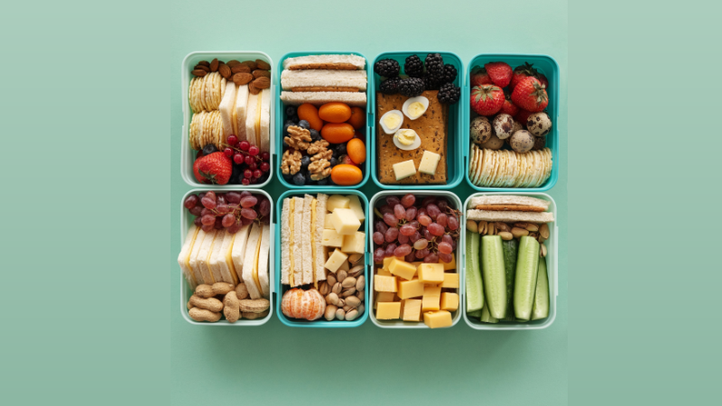

No Free Lunch
2021-09-26

The purpose of this post is to make it clear I don't work for free.
In the past family, friends, and associates have asked me to give them creative suggestions and/or to fix their problems.
This includes things like troubleshooting computer problems, researching how to write a book, brainstorming creative ideas for an app, recommendations on where to learn how to program, or direct help with their coding projects and/or websites.
It has taken years of study and practice to learn how to do those things. Yet, none have asked how much I charge or offered to pay me.
Those same people have not made an effort to maintain an active friendship with me. They only contact me when they want something. Which tells me exactly how much they value and respect me.
From now on when those people ask for suggestions or help. They should not be surprised when I quote them a price for my skills.
If they don't have the money or don't want to pay. Then they can go find someone else or learn to do themselves.
Because there is no free lunch here.